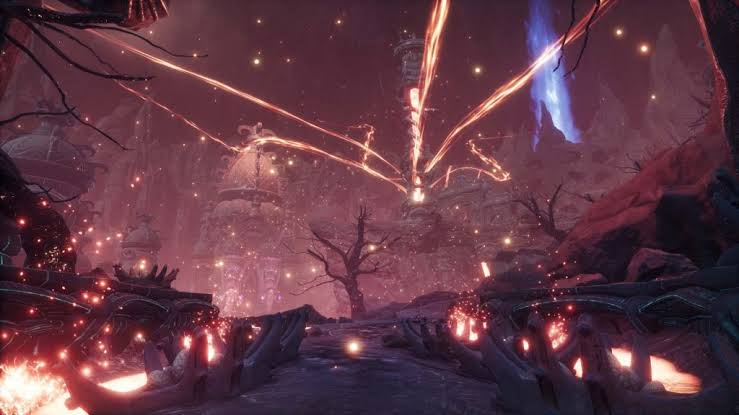

The caldera of the volcano is an endgame location within the survival game Conan Exiles.
The volcano has many unique terrain features, some serving as a harm to the player,
while others serve to provide resources or purely decorative purposes.

The Votaries of Skelos are a faction in the game Conan Exiles.
They consist of humans of various races who have made their way to the volcano. Upon hearing the whispers of the Serpent-men from the Well of Skelos, they formed a cult worshipping it. They dress is simple clothings made with the ash of the volcano sewn in as well as wield weapons crafted from the obsidian veins dotting the area. When defeated, weapons in the style of the Serpent-men can be looted from them.
I have many aspects I enjoy in the volcano but here is a list of my top 3.